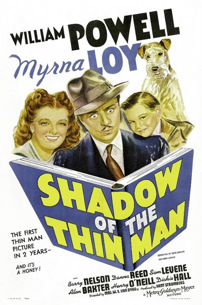

Shadow of the Thin Man

Starring: William Powell, Myrna Loy, Barry Nelson
Director: W. S. Van Dyke
Writer: Irving Brecher, Harry Kurnitz, Dashiell Hammett
Producer: Hunt Stromberg
Shadow of the Thin Man is a 1941 American comedy mystery film directed by W. S. Van Dyke and starring William Powell and Myrna Loy as Nick and Nora Charles. It was produced by Metro-Goldwyn-Mayer as the fourth installment in the Thin Man film series. The cast also features Barry Nelson, Donna Reed, Sam Levene (reprising his role from 1936's After the Thin Man), Alan Baxter, Henry O'Neill, and Dickie Hall.
Trivia
- Frances Goodrich and Albert Hackett, the husband and wife team who wrote the first three Thin Man scripts, refused to write another one.
- Goodrich said: "They press you awfully hard there…when they started talking about another Thin Man, we started throwing up and crying into our typewriters.
- After difficulties with the previous films, author Dashiell Hammett was uninvolved in the production of Shadow or the two subsequent films in the series.
Filming Locations
- On 22 June 1941, MGM filmed exteriors for Shadow of the Thin Man in Berkeley, California, with Golden Gate Fields racetrack, which first opened on 1 February the same year, as Greenway Park.
Previous Showings
2 Runs • 0 Festivals
Original Billings: 1 run (November 30, 1941)
Original Run: November 30, 1941 (Sunday - Wednesday)
All runs on record (2):
- November 30, 1941 (Sunday - Wednesday)William Powell, Myrna Loy
- July 20 - 21, 1992w/ Another Thin Man